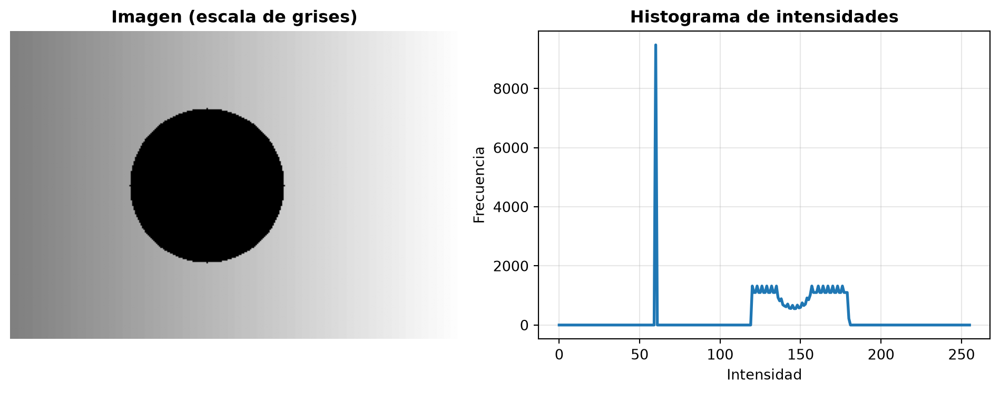
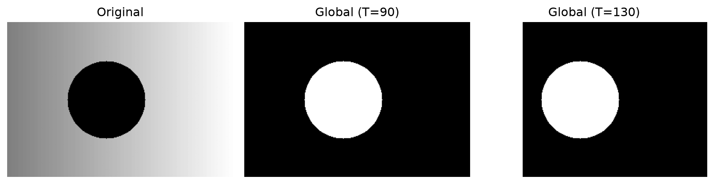
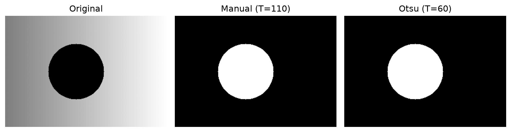
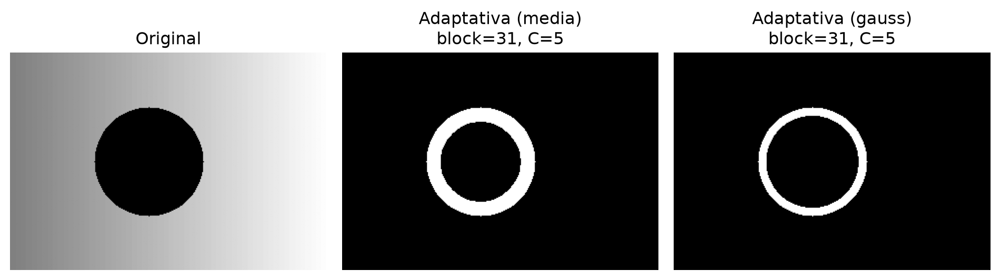
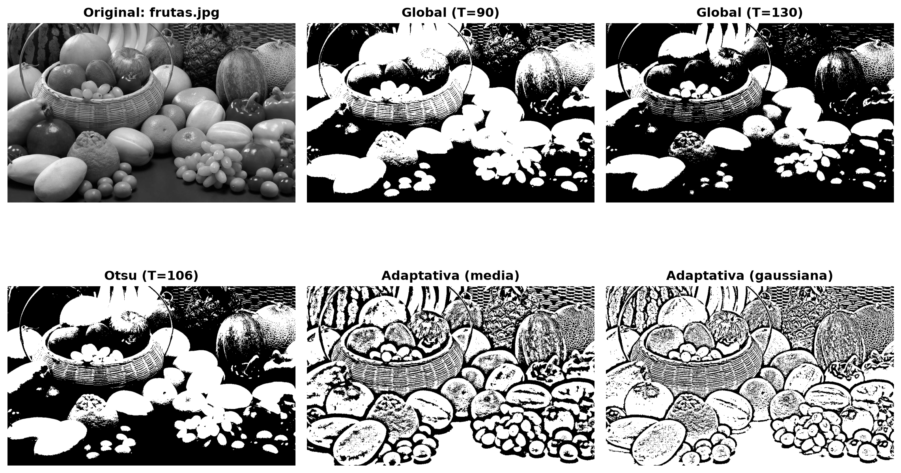

Segmentación por similaridad
Umbralización, Otsu y umbral adaptativo (OpenCV)
1 Propósito de la sesión
Al finalizar, podrás:
- Explicar segmentación por similaridad (regiones) y cuándo usar umbralización.
- Aplicar en OpenCV:
- umbralización global (manual),
- umbralización automática con Otsu,
- umbralización adaptativa (media y Gaussiana).
- Interpretar resultados y documentar decisiones (parámetros, ventajas/limitaciones).
2 Recordatorio: bordes vs regiones
- Bordes (discontinuidades): buscan cambios bruscos de intensidad (Sobel, Canny).
- Regiones (similaridad): buscan píxeles “parecidos” según un criterio (intensidad, color, textura).
En esta sesión: intensidad \(\rightarrow\) máscaras binarias (objeto/fondo).
3 Umbralización global (idea)
Sea \(f(x,y)\) la intensidad en escala de grises.
La umbralización global define:
\[ g(x,y)= \begin{cases} 1 & \text{si } f(x,y) > T \\ 0 & \text{en otro caso} \end{cases} \]
- \(T\) es un umbral único para toda la imagen.
- Ventaja: simple y rápida.
- Riesgo: depende mucho de iluminación y contraste.
4 El histograma guía la elección de \(T\)
- Si el histograma es bimodal (dos “picos”): suele existir un \(T\) razonable entre ambos.
- Si no es bimodal: un único \(T\) puede fallar (sombras, fondo texturizado, gradientes de iluminación).
5 OpenCV: umbralización global
En OpenCV:
cv2.threshold(img, T, maxVal, type)- Devuelve:
(ret, dst), donderetsuele ser el umbral usado (útil en Otsu).
Tipos comunes: - THRESH_BINARY - THRESH_BINARY_INV
6 Ejemplo: dos umbrales manuales
import cv2
import matplotlib.pyplot as plt
# Usaremos la imagen sintética 'img' creada antes (uint8, gris)
T1, T2 = 90, 130
_, th1 = cv2.threshold(img, T1, 255, cv2.THRESH_BINARY_INV)
_, th2 = cv2.threshold(img, T2, 255, cv2.THRESH_BINARY_INV)
fig, axs = plt.subplots(1, 3, figsize=(10, 4))
axs[0].imshow(img, cmap="gray"); axs[0].set_title("Original"); axs[0].axis("off")
axs[1].imshow(th1, cmap="gray"); axs[1].set_title(f"Global (T={T1})"); axs[1].axis("off")
axs[2].imshow(th2, cmap="gray"); axs[2].set_title(f"Global (T={T2})"); axs[2].axis("off")
plt.tight_layout()
plt.show()
Para documentar en tu notebook:
- ¿Qué cambia al mover \(T\)?
- ¿Aparece ruido? ¿Se pierde parte del objeto?
7 Limitaciones típicas de un umbral global
- Sombras / iluminación no uniforme: el objeto puede “mezclarse” con el fondo.
- Fondo con gradiente: un \(T\) funciona en una zona, falla en otra.
- Textura: el histograma deja de ser simple (más picos).
Esto motiva umbrales automáticos (Otsu) o locales (adaptativa).
8 Otsu: umbralización automática (global)
Otsu busca un \(T\) que separe dos clases maximizando la separabilidad (equivalentemente: minimiza varianza intra-clase).
- Funciona bien cuando hay dos poblaciones dominantes (aprox. bimodal).
- Sigue siendo global: un único \(T\).
En OpenCV:
cv2.threshold(img, 0, 255, THRESH_BINARY + THRESH_OTSU)- El umbral resultante viene en
ret.
9 Ejemplo: Otsu vs manual
import cv2
import matplotlib.pyplot as plt
# Otsu (invertimos para que el objeto oscuro quede blanco)
ret_otsu, th_otsu = cv2.threshold(img, 0, 255, cv2.THRESH_BINARY_INV + cv2.THRESH_OTSU)
# Comparación con un umbral manual razonable
T_manual = 110
_, th_manual = cv2.threshold(img, T_manual, 255, cv2.THRESH_BINARY_INV)
fig, axs = plt.subplots(1, 3, figsize=(10, 4))
axs[0].imshow(img, cmap="gray"); axs[0].set_title("Original"); axs[0].axis("off")
axs[1].imshow(th_manual, cmap="gray"); axs[1].set_title(f"Manual (T={T_manual})"); axs[1].axis("off")
axs[2].imshow(th_otsu, cmap="gray"); axs[2].set_title(f"Otsu (T={ret_otsu:.0f})"); axs[2].axis("off")
plt.tight_layout()
plt.show()
Pregunta para discusión:
- ¿Otsu mejora o empeora con iluminación no uniforme? ¿por qué?
10 Umbralización adaptativa (local)
En lugar de un único \(T\), se usa un umbral local \(T(x,y)\) calculado en una ventana.
En OpenCV:
cv2.adaptiveThreshold(...)
Parámetros clave:
blockSize: tamaño de la vecindad (impar, p.ej. 11, 21, 31)C: constante que se resta (ajuste fino)
Dos variantes:
ADAPTIVE_THRESH_MEAN_CADAPTIVE_THRESH_GAUSSIAN_C
11 Ejemplo: adaptativa (media vs gaussiana)
import cv2
import matplotlib.pyplot as plt
blockSize = 31
C = 5
th_mean = cv2.adaptiveThreshold(
img, 255, cv2.ADAPTIVE_THRESH_MEAN_C, cv2.THRESH_BINARY_INV, blockSize, C
)
th_gauss = cv2.adaptiveThreshold(
img, 255, cv2.ADAPTIVE_THRESH_GAUSSIAN_C, cv2.THRESH_BINARY_INV, blockSize, C
)
fig, axs = plt.subplots(1, 3, figsize=(10, 4))
axs[0].imshow(img, cmap="gray"); axs[0].set_title("Original"); axs[0].axis("off")
axs[1].imshow(th_mean, cmap="gray"); axs[1].set_title(f"Adaptativa (media)\nblock={blockSize}, C={C}"); axs[1].axis("off")
axs[2].imshow(th_gauss, cmap="gray"); axs[2].set_title(f"Adaptativa (gauss)\nblock={blockSize}, C={C}"); axs[2].axis("off")
plt.tight_layout()
plt.show()
12 Comparación rápida: ¿cuándo usar qué?
- Global manual: control total, útil si el contraste es estable.
- Otsu: automático, útil si el histograma es (casi) bimodal.
- Adaptativa: útil con iluminación no uniforme (sombras, gradientes).
Lo importante para la actividad: comparar y argumentar.
13 Plantilla de análisis (para Markdown del notebook)
Sugerencia de estructura de comentario:
- Método: (global / Otsu / adaptativa-media / adaptativa-gaussiana)
- Parámetros: \(T\) o (
blockSize,C) - Observación: ¿separa objeto/fondo? ¿ruido? ¿fragmentación?
- Ventaja / limitación: ¿por qué ocurre lo observado?
- Siguiente iteración: ¿qué ajustarías y en qué dirección?
14 Checklist para la Actividad 3A (Clase 1)
Para tu libreta:
En la siguiente sesión: k-means sobre intensidades y comparación final.
15 Código base con frutas.jpg (puedes reemplazar la ruta)
import cv2
import matplotlib.pyplot as plt
# 1) Cargar imagen (BGR) y convertir a gris
img_bgr = cv2.imread("imagenes/frutas.jpg")
if img_bgr is None:
raise FileNotFoundError("No se encontró la imagen en 'imagenes/frutas.jpg'")
img_gray = cv2.cvtColor(img_bgr, cv2.COLOR_BGR2GRAY)
# 2) Global (dos umbrales)
_, thA = cv2.threshold(img_gray, 90, 255, cv2.THRESH_BINARY)
_, thB = cv2.threshold(img_gray, 130, 255, cv2.THRESH_BINARY)
# 3) Otsu
ret, thO = cv2.threshold(img_gray, 0, 255, cv2.THRESH_BINARY + cv2.THRESH_OTSU)
# 4) Adaptativa
thM = cv2.adaptiveThreshold(img_gray, 255, cv2.ADAPTIVE_THRESH_MEAN_C,
cv2.THRESH_BINARY, 31, 5)
thG = cv2.adaptiveThreshold(img_gray, 255, cv2.ADAPTIVE_THRESH_GAUSSIAN_C,
cv2.THRESH_BINARY, 31, 5)
# 5) Comparación visual
fig, axs = plt.subplots(2, 3, figsize=(12, 8))
axs[0,0].imshow(img_gray, cmap="gray"); axs[0,0].set_title("Original: frutas.jpg", fontweight="bold"); axs[0,0].axis("off")
axs[0,1].imshow(thA, cmap="gray"); axs[0,1].set_title("Global (T=90)", fontweight="bold"); axs[0,1].axis("off")
axs[0,2].imshow(thB, cmap="gray"); axs[0,2].set_title("Global (T=130)", fontweight="bold"); axs[0,2].axis("off")
axs[1,0].imshow(thO, cmap="gray"); axs[1,0].set_title(f"Otsu (T={ret:.0f})", fontweight="bold"); axs[1,0].axis("off")
axs[1,1].imshow(thM, cmap="gray"); axs[1,1].set_title("Adaptativa (media)", fontweight="bold"); axs[1,1].axis("off")
axs[1,2].imshow(thG, cmap="gray"); axs[1,2].set_title("Adaptativa (gaussiana)", fontweight="bold"); axs[1,2].axis("off")
plt.tight_layout(); plt.show()